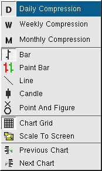

Chart Compression

Description:
Chart compression is date and time range of each bar of a chart. The
available types are:
- Daily - One bar consists of the entire trading range for one day.
- Weekly - One bar consists of the entire trading range for one week.
- Monthly - One bar consists of the entire trading range for one
month.